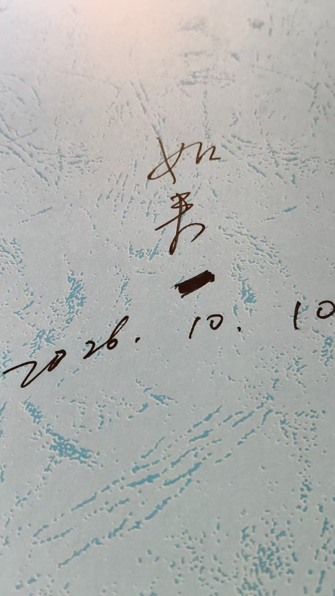
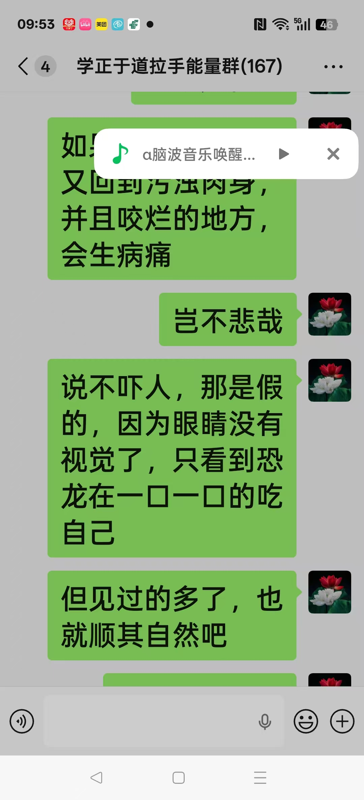
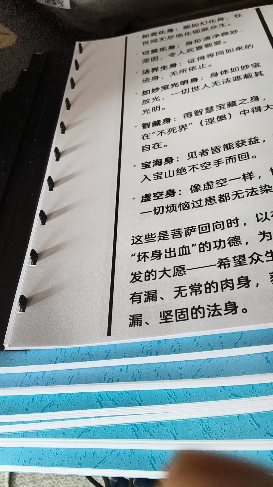
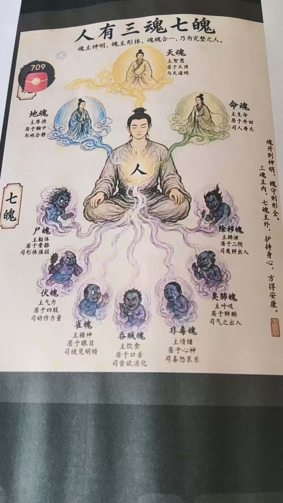

20261008养生功，转化武功硬气功的方法
修炼修行符咒术法 原始对话记录早上两点多就醒了
打开手机，看到安徽一个人
在网上教硬气功
大力金刚掌
十二节
竟然是左拉手，有拉手，上拉手，下拉手
拉手拉到手热，舌抵上腭，气沉丹田
就这么简单
不过确实开砖碎石
让我想起了养生功，转化武功硬气功的方法
[强][强][强]
咱们这个治病的，就叫养生功
这样一转化，就成了武功硬功
开砖碎石，徒手开硬核桃，等等
练武功的哪里多
山东跟河北沧州
山东水泊梁山108好汉
以前，出过多少武术冠军
李连杰，赵长军，熊长贵
现在孩子谁受这个累，又苦又累又没结果
我小时候很好笑，好多人到我家里去教我
我武功师傅是黄埔军校孙国平老师
八十年代全国武术热
那照片上，差不多五十人吧，
那时候就八十多岁了
有空就骑个自行车往我家跑
国民党党员，老婆孩子都在微山湖，跟他划清界限
最后，死在了去微山湖的火车上

[呲牙][呲牙][呲牙]
昨晚整理出如来境界
马上就打印了，两本
十地菩萨境界跟修法
这个是佛的境界
阴神，
只修性，不修命的结果
也就是说，只冥想不拉手
所以，拉手，才有阳性能量
阴神，能力低，消失快
继续打印
打印中，看到众菩萨大舍之心
外道来要菩萨的五脏六腑筋骨血脉，尽数拿去
想起了，北京总行，眼功第一的老杨
也是咱们十几年的学生
那时候，突然发过消息来，说有一个怪兽，类似恐龙，长的和善
但是在啃您的身体
身体中间有一个大洞，已经咬穿了
一般人，听到会惊怖
你直接与他契约
我看了一下自己的身体，确实，恐龙给咬穿了，并且还在啃
但，咬过的地方，
空明感强烈
于是，我镇定自若
跟老杨说，这是在助我修成空明身
老杨恍然大悟
我就一直看着，这恐龙把我吃光
于是，整个身体，空明通透了
这就是悟道
如果很害怕，那就又回到污浊肉身，并且咬烂的地方，会生病痛
岂不悲哉
说不吓人，那是假的，因为眼睛没有视觉了，只看到恐龙在一口一口的吃自己
但见过的多了，也就顺其自然吧
修行故事之一
成就空明身

[憨笑][憨笑]
看到截屏了吗
手机弹出来
@脑波音乐
昨天，弹出了整套右脑开发摄像记忆
一大早，弹出来养生功转化硬功十二节
[呲牙][呲牙][呲牙]

现在打印的九本
华严经上没有
[憨笑][憨笑][憨笑]
奇怪吧
读的是华严经
华严经里没有这些
忍了，就这样吧，神神叨叨的活着
[呲牙][呲牙][呲牙]
对了，我不主张听脑波音乐
有一句话，叫天乐自鸣
入静了入定了，进入佛国世界，自然有美妙的音乐
所以说，打坐的时候，别去念佛号，听各种音乐
只管去

进入超静状态三魂七魄，古人早研究透了
所以说，只要用心学习就行
现在这些贪官污吏猪脑子
超越不了古人
养生功，和它转化成的硬功
早上两点多就醒了。打开手机，看到安徽一个人在网上教硬气功，大力金刚掌，十二节。
看着看着，他认出招式来了："竟然是左拉手，有拉手，上拉手，下拉手。拉手拉到手热，舌抵上腭，气沉丹田。就这么简单。"
他加了一句判断："不过确实开砖碎石。"
这句把他带到自己的东西上——"让我想起了养生功，转化武功硬气功的方法"。他的说法是："咱们这个治病的，就叫养生功。这样一转化，就成了武功硬功。" 开砖碎石，徒手开硬核桃，等等。
然后是武术的话头。练武功的哪里多，"山东跟河北沧州"。山东水泊梁山一百单八将，以前出过多少武术冠军，李连杰、赵长军、熊长贵。现在孩子谁受这个累，"又苦又累又没结果"。
他自己的师傅也写在这里。"我武功师傅是黄埔军校孙国平老师。" 八十年代全国武术热，照片上差不多五十人，那时候老人已经八十多岁，有空就骑个自行车往他家跑。后来死在了去微山湖的火车上。
后半页转到修行的另一头。阴神，"只修性，不修命的结果"，就是只冥想不拉手。"所以，拉手，才有阳性能量。阴神，能力低，消失快。"
再往下是一段旧事。北京总行眼功第一的老杨，十几年的学生，发消息说有个怪兽，像恐龙，长得和善，在啃他身体，中间已经咬穿一个大洞。一般人会惊怖。他去看自己的身体，确实咬穿了，咬过的地方"空明感强烈"。于是他镇定下来，跟老杨说："这是在助我修成空明身。" 他就一直看着，那恐龙把他吃光。
"于是，整个身体，空明通透了。这就是悟道。"
他补了一句实话："说不吓人，那是假的，因为眼睛没有视觉了，只看到恐龙在一口一口的吃自己。但见过的多了，也就顺其自然吧。"
末尾是脑波音乐。他不主张听。"有一句话，叫天乐自鸣。入静了入定了，进入佛国世界，自然有美妙的音乐。所以说，打坐的时候，别去念佛号，听各种音乐。"
最后一行写：三魂七魄，古人早研究透了。"所以说，只要用心学习就行。"